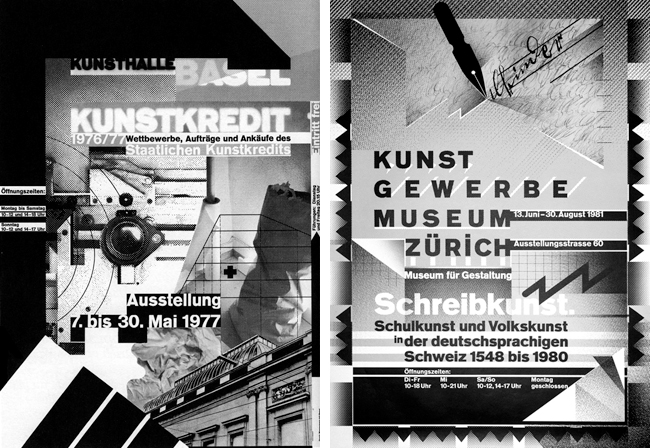
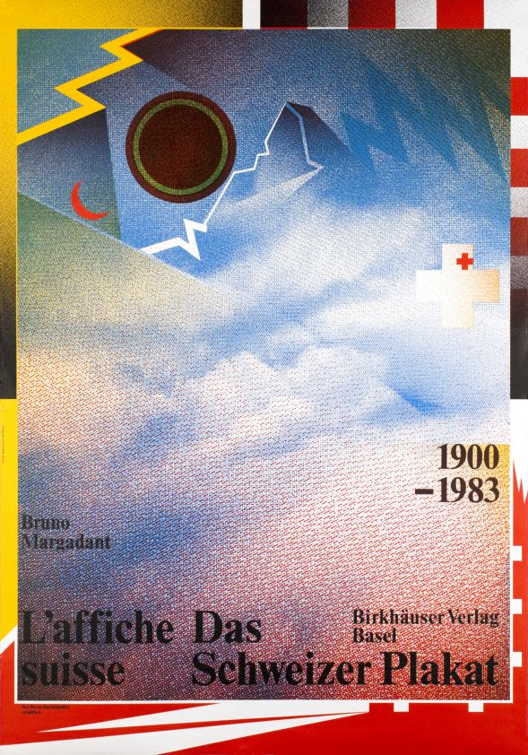
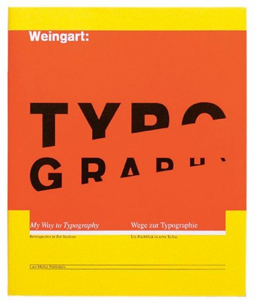

WOLFGANG
WEINGART
“For me, typography is a triangular relationship between design idea, typographic elements, and printing technique.”
CHILDHOOD
Born in 1941, Wolfgang Weingart grew up in a town Konstanz (Constance) in Southern Germany on the border of Switzerland just at the foot of the Alps. Growing up with Doctors as parents, Wolfgang never really had any influence in design. After spending most of his childhood in Germany, Weingart moved to Lisbon in 1954, it was here that he developed his interest for the arts with the local museums.
EDUCATION
After 4 years living in Portugal, Weingart moved back to Germany where he enrolled in the Merz Academy in Stuttgart. Here he studied Graphic Arts for 2 years, studying this included linocut which is a printmaking technique, woodblock printing technique for printing text, images or patterns on textiles and typesetting composing text/type into form for printing.
From here Weingart then began a 3 year apprenticeship at Ruwe Printing as a typesetter and it was from here that Weingart became familiar with Swiss type. In 1963 Weingart moved to Basel, Switzerland where he enrolled in the Basel School of design shortly after he met Armin Hofmann, he originally enrolled as an independent student however he was more of an observer.
TEACHING AND WORK
The 27 year old unknown designer then began teaching in the Basel School of Design in 1968 after being requested to teach the Advanced Program for Graphic Design by Hofmann, where designers from all over the world flew to the program and it was there where he was one of the most respected teachers until he left in 2005. Also Weingart became an instructor at the Yale University Summer Graphic Design program in Brissago from 1974-1996, during this time he designed a poster for photographer John Glagola. Weingart continued to teach all around the world for 40 years in places such as Europe, North and South America, Asia, Australia and New Zealand until he retired in 2004. Many of his students would misunderstand his teachings to be his own style and soon it began to quickly spread as the ‘Weingart Style’.
"I took 'Swiss Typography' as my starting point, but then I blew it apart, never forcing any style upon my students. I never intended to create a 'style'. It just happened that the students picked up — and misinterpreted — a so-called 'Weingart style' and spread it around.”
Although Weingart retired in 2004 he still continues to teach a summer program in Basel, Basics in Design and Typography.
KunstKredit- this is a cover for a magazine that Weingart done, which features his favourite font Akzidenz Grotesk
Affiche das Schweizer Plakat- Here is an exhibition poster, 1984 probably his most well-known, featuring the Matterhorn
Typography- His most famous work, a book discussing his philosophy and work
INFLUENCES
Armin Hofmann would not only be Weingarts biggest influence but also the reason for his success as it was really down to Hofmann that Weingart got into the core of Design, also it was Hofmanns sheer belief in Weingart that he trusted him to teach when he was an unknown designer that nobody had heard or seen of. Hofmann was greatly inspired by international Style which was then mirrored in Weingarts style of design.
Emil Ruder worked closely with Hofmann and was also responsible for Weingarts comings to teach as it was him along with Hofmann who had a goal of creating an advanced graphic-design program for postgraduate professionals at the Basel School.
The International Style